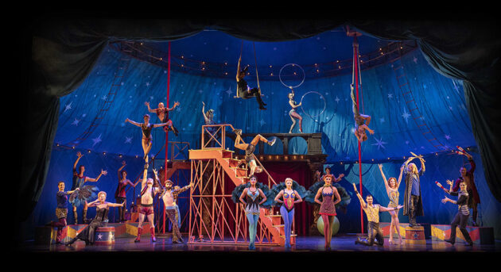

Ο μιούζικαλ είναι είδος θεάτρου που περιλαμβάνει τραγούδια, διαλόγους και χορό. Είναι ένας τρόπος να ειπωθεί μια ιστορία και να εκφραστεί το συναισθηματικό περιεχόμενό της, δηλαδή το χιούμορ, το πάθος, τον έρωτα, το θυμό και πολλά άλλα. Αυτό επιτυγχάνεται, κινητοποιώντας μέσα από το κείμενο, τη μουσική, την κίνηση καθώς και τις τεχνικές πτυχές της ψυχαγωγίας, όπως π.χ. τα οπτικά εφέ, έτσι ώστε να δημιουργηθεί ένα ενιαίο σύνολο από το οποίο καμία από τις τέχνες που περιλαμβάνει να μην ξεχωρίζει από την άλλη με κανένα τρόπο. Παρ' όλο που το μιούζικαλ καλύπτεται από άλλες θεατρικές μορφές όπως η όπερα, αυτή η ιδιαιτερότητα να έχει ίση αντιμετώπιση και να δίνει την ίδια σοβαρότητα σε όλες τις τέχνες που το αποτελούν, δίνει στο είδος έναν άλλο χαρακτήρα, ένα χαρακτήρα που αναγνωρίζεται ως το μουσικό θέατρο.Υπάρχουν πολλά μιούζικαλ που παίρνουν την ιδέα τους από έργα ή από κινούμενα σχέδια.
Τα μιούζικαλ έχουν γίνει γνωστά κυρίως από τα μεγάλα θέατρα και τους υψηλούς προϋπολογισμούς του West End του Λονδίνου και του Μπρόντγουεϊ της Νέας Υόρκης. Γενικότερα, τέτοιες παραγωγές ανεβάζουν παγκοσμίως ακόμα και στα πειραματικά θέατρα, στα off Broadway θέατρα (περιφερειακά της Νέας Υόρκης) ή και από ερασιτεχνικούς θιάσους και σχολεία. Εκτός από τη Βρετανία και τη Βόρεια Αμερική, υπάρχουν ζωντανές μουσικές σκηνές και σε πολλές χώρες σε Ευρώπη, Λατινική Αμερική, Αυστραλία και Ασία.
